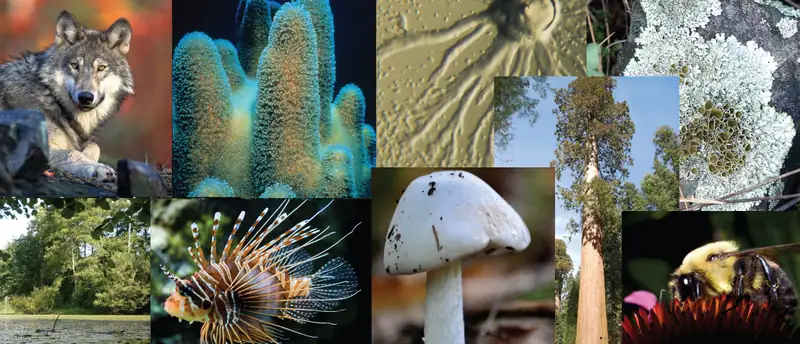
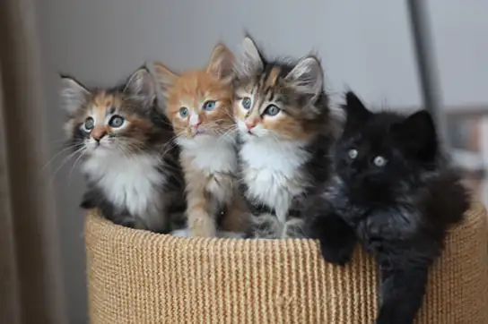
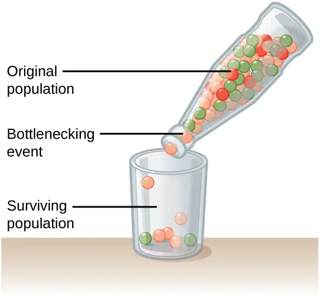
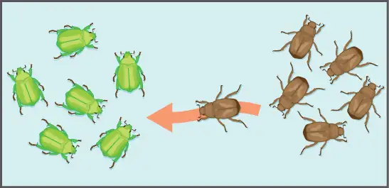
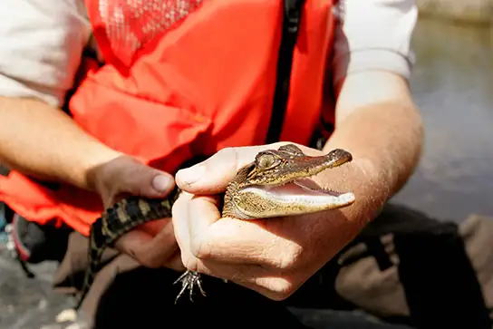
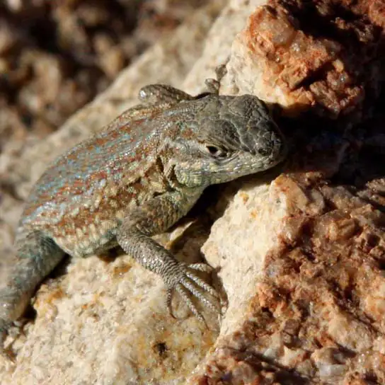
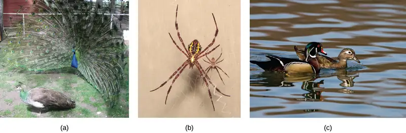

Chapter 19: The Evolution of Populations¶
Introduction¶

All life on Earth is related. Evolutionary theory states that humans, beetles, plants, and bacteria all share a common ancestor, but that billions of years of evolution have shaped each of these organisms into the forms we see today. Scientists consider evolution a key concept to understanding life. Natural selection acts to promote traits and behaviors that increase an organism’s chances of survival and reproduction, while eliminating those traits and behaviors that are detrimental to the organism. However, natural selection can only, as its name implies, select—it cannot create. We can attribute novel traits and behaviors to another evolutionary force—mutation. Mutation and other sources of variation among individuals, as well as the evolutionary forces that act upon them, alter populations and species. This combination of processes has led to the world of life we see today.
19.1 Population Evolution¶
Learning Objectives
By the end of this section, you will be able to do the following:
- Define population genetics and describe how scientists use population genetics in studying population evolution
- Define the Hardy-Weinberg principle and discuss its importance
People did not understand the mechanisms of inheritance, or genetics, at the time Charles Darwin and Alfred Russel Wallace were developing their idea of natural selection. This lack of knowledge was a stumbling block to understanding many aspects of evolution. The predominant (and incorrect) genetic theory of the time, blending inheritance, made it difficult to understand how natural selection might operate. Darwin and Wallace were unaware of the Austrian monk Gregor Mendel's 1866 publication "Experiments in Plant Hybridization", which came out not long after Darwin's book, On the Origin of Species. Scholars rediscovered Mendel’s work in the early twentieth century at which time geneticists were rapidly coming to an understanding of the basics of inheritance. Initially, the newly discovered particulate nature of genes made it difficult for biologists to understand how gradual evolution could occur. However, over the next few decades scientists integrated genetics and evolution in what became known as the modern synthesis—the coherent understanding of the relationship between natural selection and genetics that took shape by the 1940s. Generally, this concept is accepted today. In short, the modern synthesis describes how evolutionary processes, such as natural selection, can affect a population’s genetic makeup, and, in turn, how this can result in the gradual evolution of populations and species. The theory also connects population change over time (microevolution), with the processes that gave rise to new species and higher taxonomic groups with widely divergent characters (macroevolution).
Everyday Connection: Evolution and Flu Vaccines
Every fall, the media starts reporting on flu vaccinations and potential outbreaks. Scientists, health experts, and institutions determine recommendations for different parts of the population, predict optimal production and inoculation schedules, create vaccines, and set up clinics to provide inoculations. You may think of the annual flu shot as media hype, an important health protection, or just a briefly uncomfortable prick in your arm. However, do you think of it in terms of evolution?
The media hype of annual flu shots is scientifically grounded in our understanding of evolution. Each year, scientists across the globe strive to predict the flu strains that they anticipate as most widespread and harmful in the coming year. They base this knowledge on how flu strains have evolved over time and over the past few flu seasons. Scientists then work to create the most effective vaccine to combat those selected strains. Pharmaceutical companies produce hundreds of millions of doses in a short period in order to provide vaccinations to key populations at the optimal time.
Because viruses, like the flu, evolve very quickly (especially in evolutionary time), this poses quite a challenge. Viruses mutate and replicate at a fast rate, so the vaccine developed to protect against last year’s flu strain may not provide the protection one needs against the coming year’s strain. Evolution of these viruses means continued adaptations to ensure survival, including adaptations to survive previous vaccines.
Population Genetics¶
Recall that a gene for a particular character may have several alleles, or variants, that code for different traits associated with that character. For example, in the ABO blood type system in humans, three alleles determine the particular blood-type carbohydrate on the surface of red blood cells. Each individual in a population of diploid organisms can only carry two alleles for a particular gene, but more than two may be present in the individuals that comprise the population. Mendel followed alleles as they were inherited from parent to offspring. In the early twentieth century, biologists in the area of population genetics began to study how selective forces change a population through changes in allele and genotypic frequencies.
The allele frequency (or gene frequency) is the rate at which a specific allele appears within a population. Until now we have discussed evolution as a change in the characteristics of a population of organisms, but behind that phenotypic change is genetic change. In population genetics, scientists define the term evolution as a change in the allele's frequency in a population. Using the ABO blood type system as an example, the frequency of one of the alleles, IA, is the number of copies of that allele divided by all the copies of the ABO gene in the population. For example, a study in Jordan1 found a frequency of IA to be 26.1 percent. The IB and I0 alleles comprise 13.4 percent and 60.5 percent of the alleles respectively, and all of the frequencies added up to 100 percent. A change in this frequency over time would constitute evolution in the population.
The allele frequency within a given population can change depending on environmental factors; therefore, certain alleles become more widespread than others during the natural selection process. Natural selection can alter the population’s genetic makeup. An example is if a given allele confers a phenotype that allows an individual to better survive or have more offspring. Because many of those offspring will also carry the beneficial allele, and often the corresponding phenotype, they will have more offspring of their own that also carry the allele, thus, perpetuating the cycle. Over time, the allele will spread throughout the population. Some alleles will quickly become fixed in this way, meaning that every individual of the population will carry the allele, while detrimental mutations may be swiftly eliminated if derived from a dominant allele from the gene pool. The gene pool is the sum of all the alleles in a population.
Sometimes, allele frequencies within a population change randomly with no advantage to the population over existing allele frequencies. We call this phenomenon genetic drift. Natural selection and genetic drift usually occur simultaneously in populations and are not isolated events. It is hard to determine which process dominates because it is often nearly impossible to determine the cause of change in allele frequencies at each occurrence. We call an event that initiates an allele frequency change in an isolated part of the population, which is not typical of the original population, the founder effect. Natural selection, random drift, and founder effects can lead to significant changes in a population's genome.
Hardy-Weinberg Principle of Equilibrium¶
In the early twentieth century, English mathematician Godfrey Hardy and German physician Wilhelm Weinberg stated the principle of equilibrium to describe the population's genetic makeup. The theory, which later became known as the Hardy-Weinberg principle of equilibrium, states that a population’s allele and genotype frequencies are inherently stable—unless some kind of evolutionary force is acting upon the population, neither the allele nor the genotypic frequencies would change. The Hardy-Weinberg principle assumes an infinitely large population and conditions with no mutations, migration, emigration, or selective pressure for or against genotype. While no population can satisfy those conditions, the principle offers a useful model against which to compare real population changes.
Working under this theory, population geneticists represent different alleles as different variables in their mathematical models. The variable p, for example, often represents the frequency of a particular allele, say Y for the trait of yellow in Mendel’s peas, while the variable q represents the frequency of y alleles that confer the color green. If these are the only two possible alleles for a given locus in the population, p + q = 1. In other words, all the p alleles and all the q alleles comprise all of the alleles for that locus in the population.
However, what ultimately interests most biologists is not the frequencies of different alleles, but the frequencies of the resulting genotypes, known as the population’s genetic structure, from which scientists can surmise phenotype distribution. If we observe the phenotype, we can know only the homozygous recessive allele's genotype. The calculations provide an estimate of the remaining genotypes. Since each individual carries two alleles per gene, if we know the allele frequencies (p and q), predicting the genotypes' frequencies is a simple mathematical calculation to determine the probability of obtaining these genotypes if we draw two alleles at random from the gene pool. In the above scenario, an individual pea plant could be pp (YY), and thus produce yellow peas; pq (Yy), also yellow; or qq (yy), and thus produce green peas (Figure 19.2). In other words, the frequency of pp individuals is simply p2; the frequency of pq individuals is 2pq; and the frequency of qq individuals is q2. Again, if p and q are the only two possible alleles for a given trait in the population, these genotypes frequencies will sum to one: p2 + 2pq + q2 = 1.
Visual Connection
![The Hardy-Weinberg principle is used to predict the genotypic distribution of offspring in a given population. In the example given, pea plants have two different alleles for pea color. The dominant capital Y allele results in yellow pea color, and the recessive small y allele results in green pea color. The distribution of individuals in a population of 500 is given. Of the 500 individuals, 245 are homozygous dominant (capital Y capital Y) and produce yellow peas. 210 are heterozygous (capital Y small y) and also produce yellow peas. 45 are homozygous recessive (small y small y) and produce green peas. The frequencies of homozygous dominant, heterozygous, and homozygous recessive individuals are 0.49, 0.42, and 0.09, respectively. Each of the 500 individuals provides two alleles to the gene pool, or 1000 total. The 245 homozygous dominant individuals provide two capital Y alleles to the gene pool, or 490 total. The 210 heterozygous individuals provide 210 capital Y and 210 small y alleles to the gene pool. The 45 homozygous recessive individuals provide two small y alleles to the gene pool, or 90 total. The number of capital Y alleles is 490 from homozygous dominant individuals plus 210 from homozygous recessive individuals, or 700 total. The number of small y alleles is 210 from heterozygous individuals plus 90 from homozygous recessive individuals, or 300 total. The allelic frequency is calculated by dividing the number of each allele by the total number of alleles in the gene pool. For the capital Y allele, the allelic frequency is 700 divided by 1000, or 0.7; this allelic frequency is called p. For the small y allele the allelic frequency is 300 divided by 1000, or 0.3; the allelic frequency is called q. Hardy-Weinberg analysis is used to determine the genotypic frequency in the offspring. The Hardy-Wienberg equation is p-squared plus 2pq plus q-squared equals 1. For the population given, the frequency is 0.7-squared plus 2 times .7 times .3 plus .3-squared equals one. The value for p-squared, 0.49, is the predicted frequency of homozygous dominant (capital Y capital Y) individuals. The value for 2pq, 0.42, is the predicted frequency of heterozygous (capital Y small y) individuals. The value for q-squared, .09, is the predicted frequency of homozygous recessive individuals. Note that the predicted frequency of genotypes in the offspring is the same as the frequency of genotypes in the parent population. If all the genotypic frequencies, .49 plus .42 plus .09, are added together, the result is one.](img/figure-b19-01-02.webp)
In plants, violet flower color (V) is dominant over white (v). If p = 0.8 and q = 0.2 in a population of 500 plants, how many individuals would you expect to be homozygous dominant (VV), heterozygous (Vv), and homozygous recessive (vv)? How many plants would you expect to have violet flowers, and how many would have white flowers?
In theory, if a population is at equilibrium—that is, there are no evolutionary forces acting upon it—generation after generation would have the same gene pool and genetic structure, and these equations would all hold true all of the time. Of course, even Hardy and Weinberg recognized that no natural population is immune to evolution. Populations in nature are constantly changing in genetic makeup due to drift, mutation, possibly migration, and selection. As a result, the only way to determine the exact distribution of phenotypes in a population is to go out and count them. However, the Hardy-Weinberg principle gives scientists a mathematical baseline of a non-evolving population to which they can compare evolving populations and thereby infer what evolutionary forces might be at play. If the frequencies of alleles or genotypes deviate from the value expected from the Hardy-Weinberg equation, then the population is evolving.
Interactive
Use this online calculator to determine a population's genetic structure.
19.2 Population Genetics¶
Learning Objectives
By the end of this section, you will be able to do the following:
- Describe the different types of variation in a population
- Explain why natural selection can only act upon heritable variation
- Describe genetic drift and the bottleneck effect
- Explain how each evolutionary force can influence a population's allele frequencies
A population's individuals often display different phenotypes, or express different alleles of a particular gene, which scientists refer to as polymorphisms. We call populations with two or more variations of particular characteristics polymorphic. A number of factors, including the population’s genetic structure and the environment (Figure 19.3) influence population variation, the distribution of phenotypes among individuals. Understanding phenotypic variation sources in a population is important for determining how a population will evolve in response to different evolutionary pressures.

Genetic variability¶
Natural selection and some of the other evolutionary forces can only act on heritable traits, namely an organism’s genetic code. Because alleles are passed from parent to offspring, those that confer beneficial traits or behaviors may be selected, while deleterious alleles may not. Acquired traits, for the most part, are not heritable. For example, if an athlete works out in the gym every day, building up muscle strength, the athlete’s offspring will not necessarily grow up to be a body builder. If there is a genetic basis for the ability to run fast, on the other hand, a parent may pass this to a child.
Interactive
Before Darwinian evolution became the prevailing theory of the field, French naturalist Jean-Baptiste Lamarck theorized that organisms could inherit acquired traits. While the majority of scientists have not supported this hypothesis, some have recently begun to realize that Lamarck was not completely wrong. Visit this site to learn more.
Heritability is the fraction of phenotype variation that we can attribute to genetic differences, or genetic variability, among individuals in a population. The greater the heritability of a population’s phenotypic variation, the more susceptible it is to the evolutionary forces that act on heritable variation.
We call the diversity of alleles and genotypes within a population genetic variability. When scientists are involved in the breeding of a species, such as with animals in zoos and nature preserves, they try to increase a population’s genetic variability to preserve as much of the phenotypic diversity as possible. This also helps reduce associated risks of inbreeding, the mating of closely related individuals, which can have the undesirable effect of bringing together deleterious recessive mutations that can cause abnormalities and susceptibility to disease. For example, a disease that is caused by a rare, recessive allele might exist in a population, but it will only manifest itself when an individual carries two copies of the allele. Because the allele is rare in a normal, healthy population with unrestricted habitat, the chance that two carriers will mate is low, and even then, only 25 percent of their offspring will inherit the disease allele from both parents. While it is likely to happen at some point, it will not happen frequently enough for natural selection to be able to swiftly eliminate the allele from the population, and as a result, the allele maintains itself at low levels in the gene pool. However, if a family of carriers begins to interbreed with each other, this will dramatically increase the likelihood of two carriers mating and eventually producing diseased offspring, a phenomenon that scientists call inbreeding depression.
Changes in allele frequencies that we identify in a population can shed light on how it is evolving. In addition to natural selection, there are other evolutionary forces that could be in play: genetic drift, gene flow, mutation, nonrandom mating, and environmental variation.
Genetic Drift¶
The theory of natural selection stems from the observation that some individuals in a population are more likely to survive longer and have more offspring than others; thus, they will pass on more of their genes to the next generation. A big, powerful male gorilla, for example, is much more likely than a smaller, weaker one to become the population’s silverback, the pack’s leader who mates far more than the other males of the group. The pack leader will father more offspring, who share half of his genes, and are likely to also grow bigger and stronger like their father. Over time, the genes for bigger size will increase in frequency in the population, and the population will, as a result, grow larger on average. That is, this would occur if this particular selection pressure, or driving selective force, were the only one acting on the population. In other examples, better camouflage or a stronger resistance to drought might pose a selection pressure.
Another way a population’s allele and genotype frequencies can change is genetic drift (Figure 19.4), which is simply the effect of chance. By chance, some individuals will have more offspring than others—not due to an advantage conferred by some genetically-encoded trait, but just because one male happened to be in the right place at the right time (when the receptive female walked by) or because the other one happened to be in the wrong place at the wrong time (when a fox was hunting).
Visual Connection
![A population has 10 rabbits. 2 of these rabbits are homozygous dominant for the B allele and have brown coat color. 6 are heterozygous and also have brown coat color. Two are homozygous recessive and have white coat color. The frequency of the capital B allele, p, is .5 and the frequency of the small b allele, q, is also .5. Only 5 of the rabbits, including 2 homozygous dominant and 3 heterozygous individuals, produce offspring. 5 of the resulting offspring are homozygous dominant, 4 are heterozygous, and 1 is homozygous recessive. The frequency of alleles in the second generation is p=.7 and q=.3. Only 2 rabbits in the second generation produce offspring, and both of these are homozygous dominant. As a result, the recessive small b allele is lost in the third generation, and all of the rabbits are heterozygous dominant with brown coat color.](img/figure-19-02-02.webp)
Do you think genetic drift would happen more quickly on an island or on the mainland?
Small populations are more susceptible to the forces of genetic drift. Large populations, alternatively, are buffered against the effects of chance. If one individual of a population of 10 individuals happens to die at a young age before it leaves any offspring to the next generation, all of its genes—1/10 of the population’s gene pool—will be suddenly lost. In a population of 100, that’s only 1 percent of the overall gene pool; therefore, it is much less impactful on the population’s genetic structure.
Interactive
Go to this site to watch an animation of random sampling and genetic drift in action.
Natural events, such as an earthquake disaster that kills—at random—a large portion of the population, can magnify genetic drift. Known as the bottleneck effect, it results in suddenly wiping out a large portion of the gene pool (Figure 19.5). At once, the survivors' genetic structure becomes the entire population's genetic structure, which may be very different from the pre-disaster population.

Another scenario in which populations might experience a strong influence of genetic drift is if some portion of the population leaves to start a new population in a new location or if a physical barrier divides a population. In this situation, those individuals are an unlikely representation of the entire population, which results in the founder effect. The founder effect occurs when the genetic structure changes to match that of the new population’s founding fathers and mothers. Researchers believe that the founder effect was a key factor in the genetic history of the Afrikaner population of Dutch settlers in South Africa, as evidenced by mutations that are common in Afrikaners but rare in most other populations. This is probably because a higher-than-normal proportion of the founding colonists carried these mutations. As a result, the population expresses unusually high incidences of Huntington’s disease (HD) and Fanconi anemia (FA), a genetic disorder known to cause blood marrow and congenital abnormalities—even cancer.2
Interactive
Watch this short video to learn more about the founder and bottleneck effects. founder_bottle
Scientific Method Connection
Testing the Bottleneck Effect
Question: How do natural disasters affect a population's genetic structure?
Background: When an earthquake or hurricane suddenly wipes out much of a population, the surviving individuals are usually a random sampling of the original group. As a result, the population's genetic makeup can change dramatically. We call this phenomenon the bottleneck effect.
Hypothesis: Repeated natural disasters will yield different population genetic structures; therefore, each time one runs this experiment the results will vary.
Test the hypothesis: Count out the original population using different colored beads. For example, red, blue, and yellow beads might represent red, blue, and yellow individuals. After recording the number of each individual in the original population, place them all in a bottle with a narrow neck that will only allow a few beads out at a time. Then, pour 1/3 of the bottle’s contents into a bowl. This represents the surviving individuals after a natural disaster kills a majority of the population. Count the number of the different colored beads in the bowl, and record it. Then, place all of the beads back in the bottle and repeat the experiment four more times.
Analyze the data: Compare the five populations that resulted from the experiment. Do the populations all contain the same number of different colored beads, or do they vary? Remember, these populations all came from the same exact parent population.
Form a conclusion: Most likely, the five resulting populations will differ quite dramatically. This is because natural disasters are not selective—they kill and spare individuals at random. Now think about how this might affect a real population. What happens when a hurricane hits the Mississippi Gulf Coast? How do the seabirds that live on the beach fare?
Gene Flow¶
Another important evolutionary force is gene flow: the flow of alleles in and out of a population due to the migration of individuals or gametes (Figure 19.6). While some populations are fairly stable, others experience more flux. Many plants, for example, send their pollen far and wide, by wind or by bird, to pollinate other populations of the same species some distance away. Even a population that may initially appear to be stable, such as a pride of lions, can experience its fair share of immigration and emigration as developing males leave their mothers to seek out a new pride with genetically unrelated females. This variable flow of individuals in and out of the group not only changes the population's gene structure, but it can also introduce new genetic variation to populations in different geological locations and habitats.

Mutation¶
Mutations are changes to an organism’s DNA and are an important driver of diversity in populations. Species evolve because of mutations accumulating over time. The appearance of new mutations is the most common way to introduce novel genotypic and phenotypic variability. Some mutations are unfavorable or harmful and are quickly eliminated from the population by natural selection. Others are beneficial and will spread through the population. Whether or not a mutation is beneficial or harmful is determined by whether it helps an organism survive to sexual maturity and reproduce. Some mutations do not do anything and can linger, unaffected by natural selection, in the genome. Some can have a dramatic effect on a gene and the resulting phenotype.
Nonrandom Mating¶
If individuals nonrandomly mate with their peers, the result can be a changing population. There are many reasons nonrandom mating occurs. One reason is simple mate choice. For example, female peahens may prefer peacocks with bigger, brighter tails. Natural selection picks traits that lead to more mating selections for an individual. One common form of mate choice, called assortative mating, is an individual’s preference to mate with partners who are phenotypically similar to themselves.
Another cause of nonrandom mating is physical location. This is especially true in large populations spread over vast geographic distances where not all individuals will have equal access to one another. Some might be miles apart through woods or over rough terrain, while others might live immediately nearby.
Environmental Variation¶
Genes are not the only players involved in determining population variation. Other factors, such as the environment (Figure 19.7) also influence phenotypes. A beachgoer is likely to have darker skin than a city dweller, for example, due to regular exposure to the sun, an environmental factor. For some species, the environment determines some major characteristics, such as sex. For example, some turtles and other reptiles have temperature-dependent sex determination (TSD). TSD means that individuals develop into males if their eggs are incubated within a certain temperature range, or females at a different temperature range. Because these phenotypic differences are due to environmental variation instead of genetic differences, they cannot be inherited and do not lead to evolution. However, environmental variation can affect evolution through natural selection favoring different alleles and shaping different phenotypes in different environments.

Geographic separation between populations can lead to differences in the phenotypic variation between those populations. We see such geographical variation between most populations and it can be significant. We can observe one type of geographic variation, a cline, as given species' populations vary gradually across an ecological gradient. Species of warm-blooded animals, for example, tend to have larger bodies in the cooler climates closer to the earth’s poles, allowing them to better conserve heat. This is a latitudinal cline. Alternatively, flowering plants tend to bloom at different times depending on where they are along a mountain slope. This is an altitudinal cline.
If there is gene flow between the populations, the individuals will likely show gradual differences in phenotype along the cline. Restricted gene flow, alternatively can lead to abrupt differences, even speciation.
19.3 Adaptive Evolution¶
Learning Objectives
By the end of this section, you will be able to do the following:
- Explain the different ways natural selection can shape populations
- Describe how these different forces can lead to different outcomes in terms of the population variation
Natural selection acts on the population’s heritable traits: selecting for beneficial alleles that allow for environmental adaptation, and thus increasing their frequency in the population, while selecting against deleterious alleles and thereby decreasing their frequency. Scientists call this process adaptive evolution. Natural selection acts on entire organisms, not on an individual allele within the organism. An individual may carry a very beneficial genotype with a resulting phenotype that, for example, increases the ability to reproduce (fecundity), but if that same individual also carries an allele that results in a fatal childhood disease, that fecundity phenotype will not pass to the next generation because the individual will not live to reach reproductive age. Natural selection acts at the individual's level. It selects for individuals with greater contributions to the gene pool of the next generation. Scientists call this an organism’s evolutionary (Darwinian) fitness.
Fitness is often quantifiable and is measured by scientists in the field. However, it is not an individual's absolute fitness that counts, but rather how it compares to the other organisms in the population. Scientists call this concept relative fitness, which allows researchers to determine which individuals are contributing additional offspring to the next generation, and thus, how the population might evolve.
There are several ways selection can affect population variation: stabilizing selection, directional selection, diversifying selection, frequency-dependent selection, and sexual selection. As natural selection influences the allele frequencies in a population, individuals can either become more or less genetically similar and the phenotypes can become more similar or more disparate.
Stabilizing Selection¶
If natural selection favors an average phenotype, selecting against extreme variation, the population will undergo stabilizing selection (Figure 19.8). In a mouse population that live in the woods, for example, natural selection is likely to favor mice that best blend in with the forest floor and are less likely for predators to spot. Assuming the ground is a fairly consistent shade of brown, those mice whose fur is most closely matched to that color will be most likely to survive and reproduce, passing on their genes for their brown coat. Mice that carry alleles that make them a bit lighter or a bit darker will stand out against the ground and be more likely to fall victim to predation. As a result of this selection, the population’s genetic variability will decrease.
Directional Selection¶
When the environment changes, populations will often undergo directional selection (Figure 19.8), which selects for phenotypes at one end of the spectrum of existing variation. A classic example of this type of selection is the evolution of the peppered moth in eighteenth- and nineteenth-century England. Prior to the Industrial Revolution, the moths were predominately light in color, which allowed them to blend in with the light-colored trees and lichens in their environment. However, as soot began spewing from factories, the trees darkened, and the light-colored moths became easier for predatory birds to spot. Over time, the frequency of the moth's melanic form increased because they had a higher survival rate in habitats affected by air pollution because their darker coloration blended with the sooty trees. Similarly, the hypothetical mouse population may evolve to take on a different coloration if something were to cause the forest floor where they live to change color. The result of this type of selection is a shift in the population’s genetic variability toward the new, fit phenotype.
Interactive
In science, we sometimes believe some things are true, and then new information becomes available that changes our understanding. The peppered moth story is an example: some scientists recently have questioned the facts behind the selection toward darker moths. Read this article to learn more.
Diversifying Selection¶
Sometimes two or more distinct phenotypes can each have their advantages for natural selection, while the intermediate phenotypes are, on average, less fit. Scientists call this diversifying selection (Figure 19.8) We see this in many animal populations that have multiple male forms. Large, dominant alpha males use brute force to obtain mates, while small males can sneak in for furtive copulations with the females in an alpha male’s territory. In this case, both the alpha males and the “sneaking” males will be selected for, but medium-sized males, who can’t overtake the alpha males and are too big to sneak copulations, are selected against. Diversifying selection can also occur when environmental changes favor individuals on either end of the phenotypic spectrum. Imagine a mouse population living at the beach where there is light-colored sand interspersed with patches of tall grass. In this scenario, light-colored mice that blend in with the sand would be favored, as well as dark-colored mice that can hide in the grass. Medium-colored mice, alternatively would not blend in with either the grass or the sand, and thus predators would most likely eat them. The result of this type of selection is increased genetic variability as the population becomes more diverse.
Visual Connection
![Part (a) shows a robin clutch size as an example of stabilizing selection. Robins typically lay four eggs. Larger clutches may result in malnourished chicks, while smaller clutches may result in no viable offspring. A wide bell curve indicates that, in the original population, there was a lot of variability in clutch size. Overlaying this wide bell curve is a narrow one that represents the clutch size after natural selection, which is much less variable. Part (b) shows moth color as an example of directional selection. Light-colored pepper moths are better camouflaged against a pristine environment, while dark-colored peppered moths are better camouflaged against a sooty environment. Thus, as the Industrial Revolution progressed in nineteenth-century England, the color of the moth population shifted from light to dark, an example of directional selection. A bell curve representing the original population and one representing the population after natural selection only slightly overlap. Part (c) shows rabbit coat color as an example of diversifying selection. In this hypothetical example, gray and Himalayan (gray and white) rabbits are better able to blend into their rocky environment than white ones. The original population is represented by a bell curve in which white is the most common coat color, while gray and Himalayan colors, on the right and left flank of the curve, are less common. After natural selection, the bell curve splits into two peaks, indicating gray and Himalayan coat color have become more common than the intermediate white coat color.](img/figure-19-03-01.webp)
In recent years, factories have become cleaner, and release less soot into the environment. What impact do you think this has had on the distribution of moth color in the population?
Frequency-Dependent Selection¶
Another type of selection, frequency-dependent selection, favors phenotypes that are either common (positive frequency-dependent selection) or rare (negative frequency-dependent selection). We can observe an interesting example of this type of selection in a unique group of Pacific Northwest lizards. Male common side-blotched lizards come in three throat-color patterns: orange, blue, and yellow. Each of these forms has a different reproductive strategy: orange males are the strongest and can fight other males for access to their females. Blue males are medium-sized and form strong pair bonds with their mates. Yellow males (Figure 19.9) are the smallest, and look a bit like females, which allows them to sneak copulations. Like a game of rock-paper-scissors, orange beats blue, blue beats yellow, and yellow beats orange in the competition for females. That is, the big, strong orange males can fight off the blue males to mate with the blue’s pair-bonded females, the blue males are successful at guarding their mates against yellow sneaker males, and the yellow males can sneak copulations from the potential mates of the large, polygynous orange males.

In this scenario, natural selection favors orange males when blue males dominate the population. Blue males will thrive when the population is mostly yellow males, and yellow males will be selected for when orange males are the most populous. As a result, populations of side-blotched lizards cycle in the distribution of these phenotypes—in one generation, orange might predominate, and then yellow males will begin to rise in frequency. Once yellow males comprise a majority of the population, blue males will be selected. Finally, when blue males become common, orange males once again will be favored. As indicated above, if the selection is against the common, favoring the rare, so in the case of the lizard there is negative frequency-dependent selection.
Negative frequency-dependent selection serves to increase the population’s genetic variability by selecting for rare phenotypes; whereas, positive frequency-dependent selection usually decreases genetic variability by selecting for common phenotypes.
Sexual Selection¶
Males and females of certain species are often quite different from one another in ways beyond the reproductive organs. Males are often larger, for example, and display many elaborate colors and adornments, like the peacock’s tail, while females tend to be smaller and duller in decoration. We call such differences sexual dimorphisms (Figure 19.10), which arise in many populations, particularly animal populations, where there is more variability in the male's reproductive success than that of the females. That is, some males—often the bigger, stronger, or more decorated males—obtain the vast majority of the total matings, while others receive none. This can occur because the males are better at fighting off other males, or because females will choose to mate with the bigger or more decorated males. In either case, this variation in reproductive success generates a strong selection pressure among males to obtain those matings, resulting in the evolution of bigger body size and elaborate ornaments to attract the females’ attention. Females, however, tend to achieve a handful of selected matings; therefore, they are more likely to select more desirable males.
Sexual dimorphism varies widely among species, and some species are even sex-role reversed. In such cases, females tend to have a greater variability in their reproductive success than males and are correspondingly selected for the bigger body size and elaborate traits usually characteristic of males.

We call the selection pressures on males and females to obtain matings sexual selection. It can result in developing secondary sexual characteristics that do not benefit the individual’s likelihood of survival but help to maximize its reproductive success. Sexual selection can be so strong that it selects traits that are actually detrimental to the individual’s survival. Think, once again, about the peacock’s tail. While it is beautiful and the male with the largest, most colorful tail is more likely to win the female, it is not the most practical appendage. In addition to greater visibility to predators, it makes the males slower in their attempted escapes. There is some evidence that this risk is why females like the big tails in the first place. The speculation is that large tails carry risk, and only the best males survive that risk: the bigger the tail, the more fit the male. We call this the handicap principle.
The good genes hypothesis states that males develop these impressive ornaments to show off their efficient metabolism or their ability to fight disease. Females then choose males with the most impressive traits because it signals their genetic superiority, which they will then pass on to their offspring. Although one may argue that females should not be picky because it will likely reduce their number of offspring, if better males father more fit offspring, it may be beneficial. Fewer, healthier offspring may increase the chances of survival more than many, weaker offspring.
Interactive
In 1915, biologist Ronald Fisher proposed another model of sexual selection: the Fisherian runaway model, which suggests that selection of certain traits is a result of sexual preference.
In both the handicap principle and the good genes hypothesis, the trait is an honest signal of the males’ quality, thus giving females a way to find the fittest mates— males that will pass the best genes to their offspring.
No Perfect Organism¶
Natural selection is a driving force in evolution and can generate populations that are better adapted to survive and successfully reproduce in their environments. However, natural selection cannot produce the perfect organism. Natural selection can only select on existing variation in the population. It does not create anything from scratch. Thus, it is limited by a population’s existing genetic variability and whatever new alleles arise through mutation and gene flow.
Natural selection is also limited because it works at the individual, not allele level, and some alleles are linked due to their physical proximity in the genome, making them more likely to pass on together (linkage disequilibrium). Any given individual may carry some beneficial and some unfavorable alleles. It is the alleles' net effect, or the organism’s fitness, upon which natural selection can act. As a result, good alleles can be lost if individuals who carry them also have several overwhelmingly bad alleles. Likewise, bad alleles can be kept if individuals who have enough good alleles to result in an overall fitness benefit carry them.
Furthermore, natural selection can be constrained by the relationships between different polymorphisms. One morph may confer a higher fitness than another, but may not increase in frequency because going from the less beneficial to the more beneficial trait would require going through a less beneficial phenotype. Think back to the mice that live at the beach. Some are light-colored and blend in with the sand, while others are dark and blend in with the patches of grass. The dark-colored mice may be, overall, more fit than the light-colored mice, and at first glance, one might expect the light-colored mice to be selected for a darker coloration. However, remember that the intermediate phenotype, a medium-colored coat, is very bad for the mice—they cannot blend in with either the sand or the grass and predators are more likely to eat them. As a result, the light-colored mice would not be selected for a dark coloration because those individuals who began moving in that direction (began selection for a darker coat) would be less fit than those that stayed light.
Finally, it is important to understand that not all evolution is adaptive. While natural selection selects the fittest individuals and often results in a more fit population overall, other forces of evolution, including genetic drift and gene flow, often do the opposite: introducing deleterious alleles to the population’s gene pool. Evolution has no purpose—it is not changing a population into a preconceived ideal. It is simply the sum of the various forces that we have described in this chapter and how they influence the population's genetic and phenotypic variability.
Chapter Review¶
Key Terms¶
- adaptive evolution
- increase in frequency of beneficial alleles and decrease in deleterious alleles due to selection
- allele frequency
- (also, gene frequency) rate at which a specific allele appears within a population
- assortative mating
- when individuals tend to mate with those who are phenotypically similar to themselves
- bottleneck effect
- magnification of genetic drift as a result of natural events or catastrophes
- cline
- gradual geographic variation across an ecological gradient
- directional selection
- selection that favors phenotypes at one end of the spectrum of existing variation
- diversifying selection
- selection that favors two or more distinct phenotypes
- evolutionary fitness
- (also, Darwinian fitness) individual’s ability to survive and reproduce
- founder effect
- event that initiates an allele frequency change in part of the population, which is not typical of the original population
- frequency-dependent selection
- selection that favors phenotypes that are either common (positive frequency-dependent selection) or rare (negative frequency-dependent selection)
- gene flow
- flow of alleles in and out of a population due to the individual or gamete migration
- gene pool
- all the alleles that the individuals in the population carry
- genetic drift
- effect of chance on a population’s gene pool
- genetic structure
- distribution of the different possible genotypes in a population
- genetic variability
- diversity of alleles and genotypes in a population
- geographical variation
- differences in the phenotypic variation between populations that are separated geographically
- good genes hypothesis
- theory of sexual selection that argues individuals develop impressive ornaments to show off their efficient metabolism or ability to fight disease
- handicap principle
- theory of sexual selection that argues only the fittest individuals can afford costly traits
- heritability
- fraction of population variation that can be attributed to its genetic variability
- honest signal
- trait that gives a truthful impression of an individual’s fitness
- inbreeding
- mating of closely related individuals
- inbreeding depression
- increase in abnormalities and disease in inbreeding populations
- macroevolution
- broader scale evolutionary changes that scientists see over paleontological time
- microevolution
- changes in a population’s genetic structure
- modern synthesis
- overarching evolutionary paradigm that took shape by the 1940s and scientists generally accept today
- nonrandom mating
- changes in a population’s gene pool due to mate choice or other forces that cause individuals to mate with certain phenotypes more than others
- population genetics
- study of how selective forces change the allele frequencies in a population over time
- population variation
- distribution of phenotypes in a population
- relative fitness
- individual’s ability to survive and reproduce relative to the rest of the population
- selective pressure
- environmental factor that causes one phenotype to be better than another
- sexual dimorphism
- phenotypic difference between a population's males and females
- stabilizing selection
- selection that favors average phenotypes
Summary¶
19.1 Population Evolution¶
The modern synthesis of evolutionary theory grew out of the cohesion of Darwin’s, Wallace’s, and Mendel’s thoughts on evolution and heredity, along with the more modern study of population genetics. It describes the evolution of populations and species, from small-scale changes among individuals to large-scale changes over paleontological time periods. To understand how organisms evolve, scientists can track populations’ allele frequencies over time. If they differ from generation to generation, scientists can conclude that the population is not in Hardy-Weinberg equilibrium, and is thus evolving.
19.2 Population Genetics¶
Both genetic and environmental factors can cause phenotypic variation in a population. Different alleles can confer different phenotypes, and different environments can also cause individuals to look or act differently. Only those differences encoded in an individual’s genes, however, can pass to its offspring and, thus, be a target of natural selection. Natural selection works by selecting for alleles that confer beneficial traits or behaviors, while selecting against those for deleterious qualities. Genetic drift stems from the chance occurrence that some individuals in the gene line have more offspring than others. When individuals leave or join the population, allele frequencies can change as a result of gene flow. Mutations to an individual’s DNA may introduce new variation into a population. Allele frequencies can also alter when individuals do not randomly mate with others in the group.
19.3 Adaptive Evolution¶
Because natural selection acts to increase the frequency of beneficial alleles and traits while decreasing the frequency of deleterious qualities, it is adaptive evolution. Natural selection acts at the individual level, selecting for those that have a higher overall fitness compared to the rest of the population. If the fit phenotypes are those that are similar, natural selection will result in stabilizing selection, and an overall decrease in the population’s variation. Directional selection works to shift a population’s variability toward a new, fit phenotype, as environmental conditions change. In contrast, diversifying selection results in increased genetic variability by selecting for two or more distinct phenotypes.
Other types of selection include frequency-dependent selection, in which individuals with either common (positive frequency-dependent selection) or rare (negative frequency-dependent selection) are selected. Finally, sexual selection results from one sex having more variability in the reproductive success than the other. As a result, males and females experience different selective pressures, which can often lead to the evolution of phenotypic differences, or sexual dimorphisms, between the two.
Visual Connection Questions¶
19.1 Population Evolution¶
1. Figure 19.2 In plants, violet flower color (V) is dominant over white (v). If p = .8 and q = 0.2 in a population of 500 plants, how many individuals would you expect to be homozygous dominant (VV), heterozygous (Vv), and homozygous recessive (vv)? How many plants would you expect to have violet flowers, and how many would have white flowers?
Answer
Figure 19.2 The expected distribution is 320 VV, 160Vv, and 20 vv plants. Plants with VV or Vv genotypes would have violet flowers, and plants with the vv genotype would have white flowers, so a total of 480 plants would be expected to have violet flowers, and 20 plants would have white flowers.
19.2 Population Genetics¶
2. Figure 19.4 Do you think genetic drift would happen more quickly on an island or on the mainland?
Answer
Figure 19.4 Genetic drift is likely to occur more rapidly on an island where smaller populations are expected to occur.
19.3 Adaptive Evolution¶
3. Figure 19.8 In recent years, factories have become cleaner, and less soot is released into the environment. What impact do you think this has had on the distribution of moth color in the population?
Answer
Figure 19.8 Moths have shifted to a lighter color.
Review Questions¶
19.1 Population Evolution¶
4. What is the difference between micro- and macroevolution?
- Microevolution describes the evolution of small organisms, such as insects, while macroevolution describes the evolution of large organisms, like people and elephants.
- Microevolution describes the evolution of microscopic entities, such as molecules and proteins, while macroevolution describes the evolution of whole organisms.
- Microevolution describes the evolution of organisms in populations, while macroevolution describes the evolution of species over long periods of time.
- Microevolution describes the evolution of organisms over their lifetimes, while macroevolution describes the evolution of organisms over multiple generations.
Answer
C
5. Population genetics is the study of:
- how selective forces change the allele frequencies in a population over time
- the genetic basis of population-wide traits
- whether traits have a genetic basis
- the degree of inbreeding in a population
Answer
A
6. Which of the following populations is not in Hardy-Weinberg equilibrium?
- a population with 12 homozygous recessive individuals (yy), 8 homozygous dominant individuals (YY), and 4 heterozygous individuals (Yy)
- a population in which the allele frequencies do not change over time
- p2 + 2pq + q2 = 1
- a population undergoing natural selection
Answer
D
7. One of the original Amish colonies rose from a ship of colonists that came from Europe. The ship’s captain, who had polydactyly, a rare dominant trait, was one of the original colonists. Today, we see a much higher frequency of polydactyly in the Amish population. This is an example of:
- natural selection
- genetic drift
- founder effect
- b and c
Answer
D
19.2 Population Genetics¶
8. When male lions reach sexual maturity, they leave their group in search of a new pride. This can alter the allele frequencies of the population through which of the following mechanisms?
- natural selection
- genetic drift
- gene flow
- random mating
Answer
C
9. Which of the following evolutionary forces can introduce new genetic variation into a population?
- natural selection and genetic drift
- mutation and gene flow
- natural selection and nonrandom mating
- mutation and genetic drift
Answer
B
10. What is assortative mating?
- when individuals mate with those who are similar to themselves
- when individuals mate with those who are dissimilar to themselves
- when individuals mate with those who are the most fit in the population
- when individuals mate with those who are least fit in the population
Answer
A
11. When closely related individuals mate with each other, or inbreed, the offspring are often not as fit as the offspring of two unrelated individuals. Why?
- Close relatives are genetically incompatible.
- The DNA of close relatives reacts negatively in the offspring.
- Inbreeding can bring together rare, deleterious mutations that lead to harmful phenotypes.
- Inbreeding causes normally silent alleles to be expressed.
Answer
C
12. What is a cline?
- the slope of a mountain where a population lives
- the degree to which a mutation helps an individual survive
- the number of individuals in the population
- gradual geographic variation across an ecological gradient
Answer
D
19.3 Adaptive Evolution¶
13. Which type of selection results in greater genetic variability in a population?
- stabilizing selection
- directional selection
- diversifying selection
- positive frequency-dependent selection
Answer
C
14. When males and females of a population look or act differently, it is referred to as ________.
- sexual dimorphism
- sexual selection
- diversifying selection
- a cline
Answer
A
15. The good genes hypothesis is a theory that explains what?
- why more fit individuals are more likely to have more offspring
- why alleles that confer beneficial traits or behaviors are selected for by natural selection
- why some deleterious mutations are maintained in the population
- why individuals of one sex develop impressive ornamental traits
Answer
D
Critical Thinking Questions¶
19.1 Population Evolution¶
16. Solve for the genetic structure of a population with 12 homozygous recessive individuals (yy), 8 homozygous dominant individuals (YY), and 4 heterozygous individuals (Yy).
Answer
p = (8*2 + 4)/48 = .42; q = (12*2 + 4)/48 = .58; p2 = .17; 2pq = .48; q2 = .34
17. Explain the Hardy-Weinberg principle of equilibrium theory.
Answer
The Hardy-Weinberg principle of equilibrium is used to describe the genetic makeup of a population. The theory states that a population’s allele and genotype frequencies are inherently stable: unless some kind of evolutionary force is acting upon the population, generation after generation of the population would carry the same genes, and individuals would, as a whole, look essentially the same.
18. Imagine you are trying to test whether a population of flowers is undergoing evolution. You suspect there is selection pressure on the color of the flower: bees seem to cluster around the red flowers more often than the blue flowers. In a separate experiment, you discover blue flower color is dominant to red flower color. In a field, you count 600 blue flowers and 200 red flowers. What would you expect the genetic structure of the flowers to be?
Answer
Red is recessive so q2 = 200/800 = 0.25; q = 0.5; p = 1 - q = 0.5; p2 = 0.25; 2pq = 0.5. You would expect 200 homozygous blue flowers, 400 heterozygous blue flowers, and 200 red flowers.
19.2 Population Genetics¶
19. Describe a situation in which a population would undergo the bottleneck effect and explain what impact that would have on the population’s gene pool.
Answer
A hurricane kills a large percentage of a population of sand-dwelling crustaceans—only a few individuals survive. The alleles carried by those surviving individuals would represent the entire population’s gene pool. If those surviving individuals are not representative of the original population, the post-hurricane gene pool will differ from the original gene pool.
20. Describe natural selection and give an example of natural selection at work in a population.
Answer
The theory of natural selection stems from the observation that some individuals in a population survive longer and have more offspring than others: thus, more of their genes are passed to the next generation. For example, a big, powerful male gorilla is much more likely than a smaller, weaker one to become the population’s silverback: the pack’s leader who mates far more than the other males of the group. Therefore, the pack leader will father more offspring who share half of his genes and are likely to grow bigger and stronger like their father. Over time, the genes for bigger size will increase in frequency in the population, and the average body size, as a result, will grow larger on average.
21. Explain what a cline is and provide examples.
Answer
A cline is a type of geographic variation that is seen in populations of a given species that vary gradually across an ecological gradient. For example, warm-blooded animals tend to have larger bodies in the cooler climates closer to the earth’s poles, allowing them to better conserve heat. This is considered a latitudinal cline. Flowering plants tend to bloom at different times depending on where they are along the slope of a mountain. This is known as an altitudinal cline.
19.3 Adaptive Evolution¶
22. Give an example of a trait that may have evolved as a result of the handicap principle and explain your reasoning.
Answer
The peacock’s tail is a good example of the handicap principle. The tail, which makes the males more visible to predators and less able to escape, is clearly a disadvantage to the bird’s survival. But because it is a disadvantage, only the most fit males should be able to survive with it. Thus, the tail serves as an honest signal of quality to the females of the population; therefore, the male will earn more matings and greater reproductive success.
23. List the ways in which evolution can affect population variation and describe how they influence allele frequencies.
Answer
There are several ways evolution can affect population variation: stabilizing selection, directional selection, diversifying selection, frequency-dependent selection, and sexual selection. As these influence the allele frequencies in a population, individuals can either become more or less related, and the phenotypes displayed can become more similar or more disparate.
Adapted from Biology 2e by OpenStax, licensed under CC BY 4.0. Access the original for free at openstax.org. Changes: converted to the web reading format of The Open Book Project.
-
Sahar S. Hanania, Dhia S. Hassawi, and Nidal M. Irshaid, “Allele Frequency and Molecular Genotypes of ABO Blood Group System in a Jordanian Population,” Journal of Medical Sciences 7 (2007): 51-58, doi:10.3923/jms.2007.51.58. ↩
-
A. J. Tipping et al., “Molecular and Genealogical Evidence for a Founder Effect in Fanconi Anemia Families of the Afrikaner Population of South Africa,” PNAS 98, no. 10 (2001): 5734-5739, doi: 10.1073/pnas.091402398. ↩